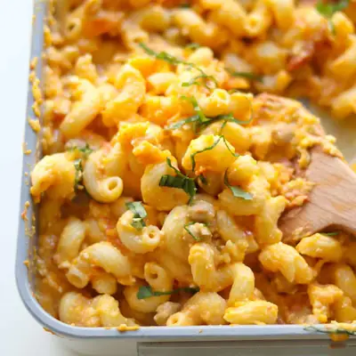

Butternut Squash Feta Pasta

Ingredients
- 4 cups butternut squash, peeled and cut into 1 inch cubes (you can also use pre-chopped)
- 8 ounces cherry tomatoes
- 15 ounce can chickpeas, rinsed and drained
- 8 ounce block of feta
- 1/2 cup olive oil
- 12 ounces small-shaped pasta (with ridges)
- 1-2 cups reserved pasta cooking water
- 3 teaspoons minced garlic (optional)
- basil or sage
- freshly ground black pepper
Steps
- Preheat the oven to 400 degrees Fahrenheit. Spread the butternut squash cubes, cherry tomatoes, and chickpeas onto the baking dish. Place the feta cheese in the middle of the dish. Pour olive oil on top and give everything a good toss.
- Bake for 35-40 minutes, until the butternut squash is tender and tomatoes should be blistered.
- While the veggies and feta roast, bring a large pot of water to a boil. Cook the pasta according to the package directions until al dente. Before draining, reserve 1-2 cups of the pasta cooking water. Drain the pasta and set aside.
- Remove the baking dish from the oven. Immediately smash the butternut squash, feta, and tomatoes with the back of a large spoon or fork until creamy. It will be pretty thick in consistency.
- Add the cooked pasta along with 1 cup of pasta water. Toss to coat everything evenly. Adjust the consistency with more pasta water if needed.
- Top with some basil and black pepper, if desired, and enjoy!
Recipe by Min Kwon · Kidfriendly Meals, from MJ and Hungryman. Saved here for personal use; the original has the full notes, tips and photos. Open original